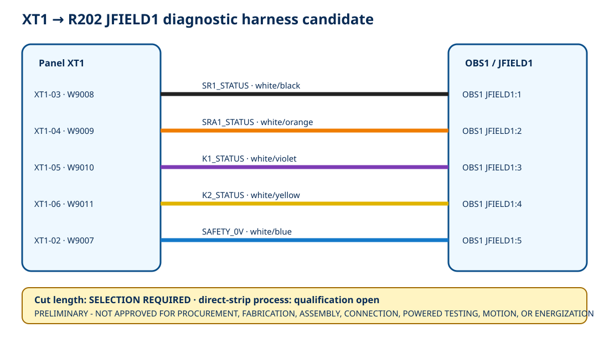

5exact wire/color candidates
6interface rows including deliberate no-connect
263.1 mmrounded geometry screen—not cut length
12open acceptance rows
Interactive wiring view

Conductor schedule
| Wire Number | Net | From | To | Wire Candidate | Color | Cut Length Mm | State |
|---|---|---|---|---|---|---|---|
| W9008 | SR1_STATUS | XT1-03 | OBS1 JFIELD1:1 | Belden 3051 WB005 | white/black | SELECTION REQUIRED | CATALOG CANDIDATE - NOT CUT OR INSTALLED |
| W9009 | SRA1_STATUS | XT1-04 | OBS1 JFIELD1:2 | Belden 3051 WO005 | white/orange | SELECTION REQUIRED | CATALOG CANDIDATE - NOT CUT OR INSTALLED |
| W9010 | K1_STATUS | XT1-05 | OBS1 JFIELD1:3 | Belden 3051 WV005 | white/violet | SELECTION REQUIRED | CATALOG CANDIDATE - NOT CUT OR INSTALLED |
| W9011 | K2_STATUS | XT1-06 | OBS1 JFIELD1:4 | Belden 3051 WY005 | white/yellow | SELECTION REQUIRED | CATALOG CANDIDATE - NOT CUT OR INSTALLED |
| W9007 | SAFETY_0V | XT1-02 | OBS1 JFIELD1:5 | Belden 3051 WU005 | white/blue | SELECTION REQUIRED | CATALOG CANDIDATE - NOT CUT OR INSTALLED |
Termination process boundary
| End | Terminal | Wire Envelope | Candidate Preparation | Torque | Required Controls | State |
|---|---|---|---|---|---|---|
| XT1 | PT 2,5 / PT 2,5 BU | flexible 0.14-4 mm2; ferrule 0.14-2.5 mm2 | direct strip 8-10 mm; insert using push button | not applicable to push-in conductor connection | received identity/orientation; calibrated strip gage; no nicked/escaped strands; insertion and pull inspection | PROCESS QUALIFICATION OPEN |
| JFIELD1 | MKDS 1/6-3,5 item 1751280 | flexible 0.14-1.5 mm2; ferrule 0.25-0.5 mm2 | direct strip 5 mm; support PCB terminal during connection | 0.22-0.25 N m | received identity/orientation; calibrated strip gage and torque driver; no nicked/escaped strands; pull and post-torque inspection | PROCESS QUALIFICATION OPEN |
Open holds
| Hold Id | Topic | State |
|---|---|---|
| OFH-HOLD-001 | received XT1 and R202 terminal identity, orientation and damage inspection | OPEN - SELECTION/EVIDENCE REQUIRED |
| OFH-HOLD-002 | exact installed XT1 and JFIELD1 endpoint coordinates and connector exit directions | OPEN - SELECTION/EVIDENCE REQUIRED |
| OFH-HOLD-003 | measured physical route and exact cut length for each of W9007-W9011 | OPEN - SELECTION/EVIDENCE REQUIRED |
| OFH-HOLD-004 | service loop, termination allowance, tolerance and strain-relief definition | OPEN - SELECTION/EVIDENCE REQUIRED |
| OFH-HOLD-005 | usable duct area, existing occupancy, fill, cover fit and status/power separation | OPEN - SELECTION/EVIDENCE REQUIRED |
| OFH-HOLD-006 | 15 mm minimum stationary bend radius and transition support in the installed route | OPEN - SELECTION/EVIDENCE REQUIRED |
| OFH-HOLD-007 | qualified direct-strip process, strip gages and calibrated torque driver | OPEN - SELECTION/EVIDENCE REQUIRED |
| OFH-HOLD-008 | strand damage, exposed copper, insertion, torque, pull and post-torque inspection records | OPEN - SELECTION/EVIDENCE REQUIRED |
| OFH-HOLD-009 | both-end wire labels and independent continuity/polarity/no-short inspection | OPEN - SELECTION/EVIDENCE REQUIRED |
| OFH-HOLD-010 | field-to-compute isolation, startup/brownout/back-power and cable-fault evidence | OPEN - SELECTION/EVIDENCE REQUIRED |
| OFH-HOLD-011 | installed EMC and thermal evidence with actuator-current conductors present | OPEN - SELECTION/EVIDENCE REQUIRED |
| OFH-HOLD-012 | qualified electrical/panel review and separate written work authorization | OPEN - SELECTION/EVIDENCE REQUIRED |
Open native page 13 source · Download conductor schedule · Primary-source register